Deploy another version
If you need to return to the previous Nightscout version, or in rare occasions, like testing a specific fix or a feature that is not released yet (i.e. not in the master branch), you might need to deploy another branch like dev in the example below.
Do not deploy dev or a branch other than master unless directed to do so (except if you know why you are doing so).
Step 1: Update your repository in GitHub
Select your platform below:
- Click here to log in at GitHub: https://github.com/login.
Enter your username or email and your password. Click
Sign in
Select your own
cgm-remote-monitorproject (notnightscout/cgm-remote-monitor) 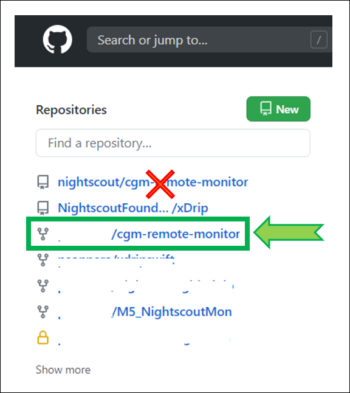Your repository will open. 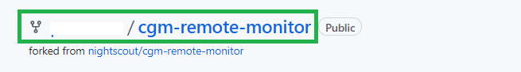
In the branch drop down menu (normally showing
master) selectdev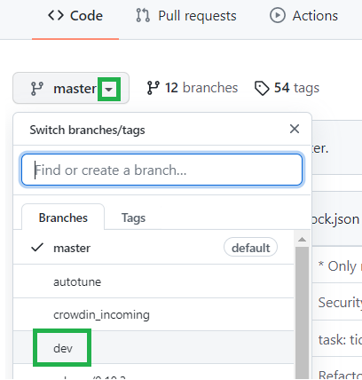Click
Fetch upstreamto update it, thenFetch and merge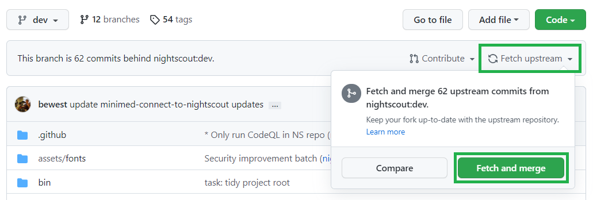After a moment, your repository should display
This branch is up to date with nightscout:dev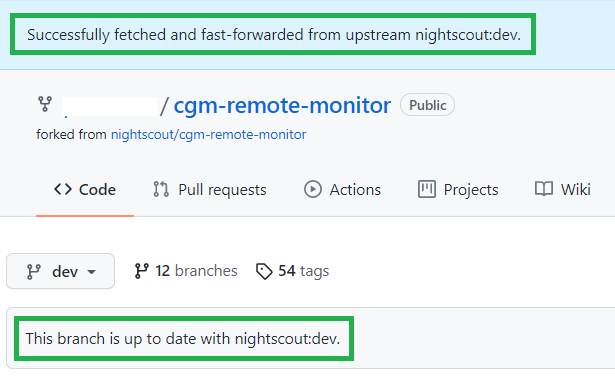If you ran into trouble, try to Redeploy (and this is mandatory if you don’t see
devin GitHub.)
{kind=link}
{kind=link}
{kind=link}
{kind=link}
{kind=link}
You don’t need to update your GitHub repository.
You don’t need to update your GitHub repository if you deployed from https://github.com/nightscout/cgm-remote-monitor.
Step 2: Deploy
Select your platform below:
Log in Heroku https://id.heroku.com/login 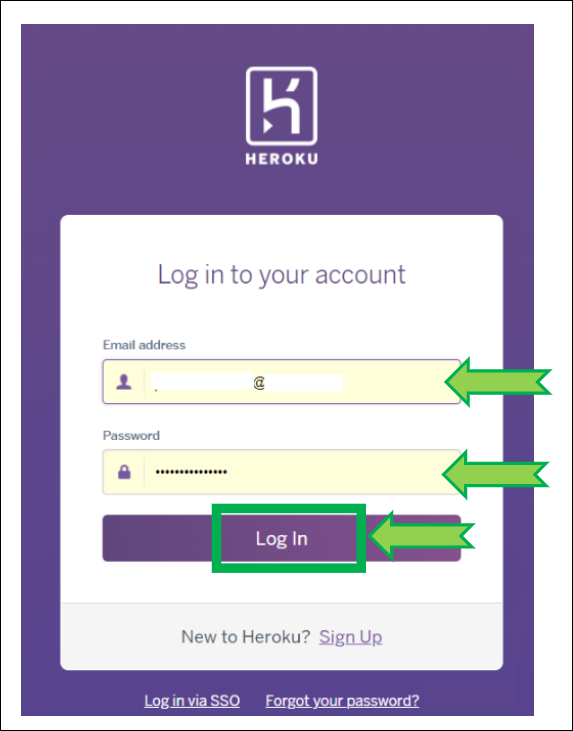
Select your app (hidden in yellow)

Click on
Deploy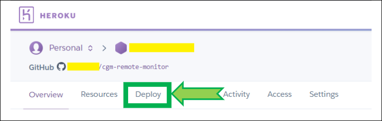Verify Heroku is connected to GitHub, if not, click
Connect to GitHub
If Heroku is not connected to GitHub, scroll down and click
Connect to GitHub, if a popup window opens and requires authorization, clickAuthorize Heroku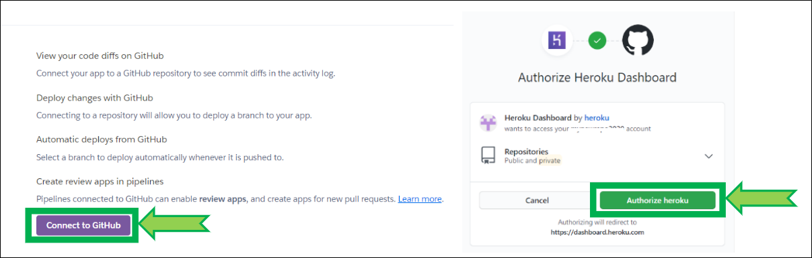Verify your app
cgm-remote-monitoris connected to GitHub 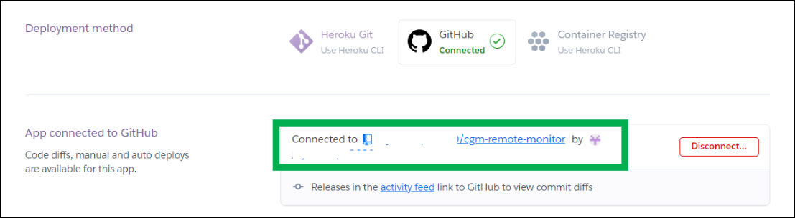If it isn’t, In
Connect to GitHub, typecgm-remote-monitorand clickSearchthen clickConnect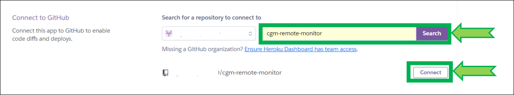If you have trouble connecting your app, click
Disconnectand reconnect it as shown above 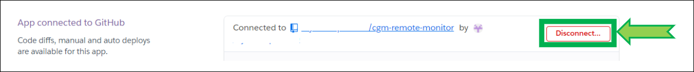Scroll down to the bottom of the page, select the
devbranch and clickDeploy Branch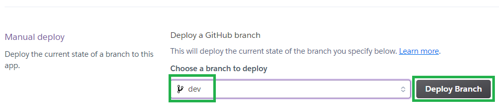Build will start and information will scroll in the log window. Do not leave the page, do not interfere and wait for completion. It might take more than 10 minutes. Interrupting the process will lead to a broken site and you’ll need to restart deployment. 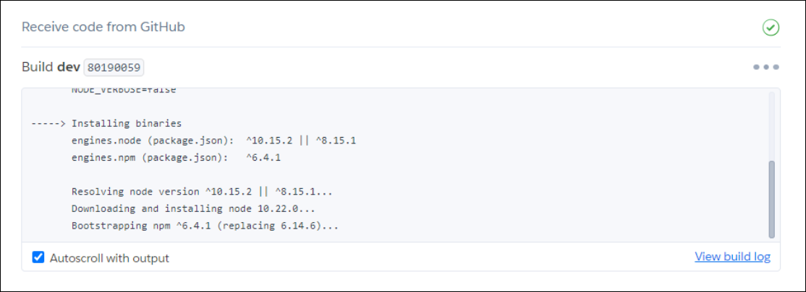
Wait until the deploy process completes and click
View(if nothing happens clickManage Appthen upper rightOpen App)
{kind=link}
{kind=link}
{kind=link}
{kind=link}
{kind=link}
{kind=link}
{kind=link}
{kind=link}
Select your Nightscout project.

Select your web app. 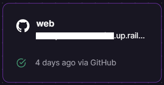
Still in
Settingslook atEnvironment.Change the
Deployment Triggerwithdev(it was showingmaster). 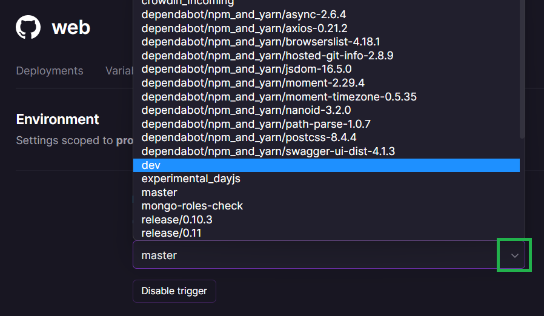If you only see
masterin the list you need to redeploy taking care to select all branches and not onlymaster. 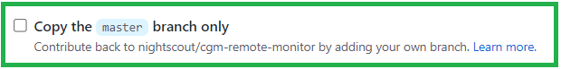Once
devselected Railway will deploy automatically.
{kind=link}
{kind=link}
{kind=link}
{kind=link}
{kind=link}
a) Open Railway and click login. Login with GitHub.
b) Select your Nightscout project.
c) Select your Docker service.
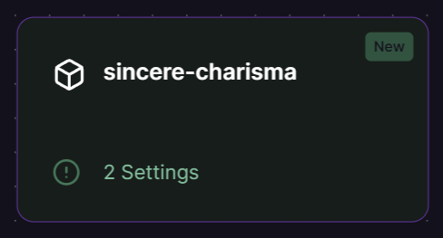
d) Click on Settings, disconnect the source image.
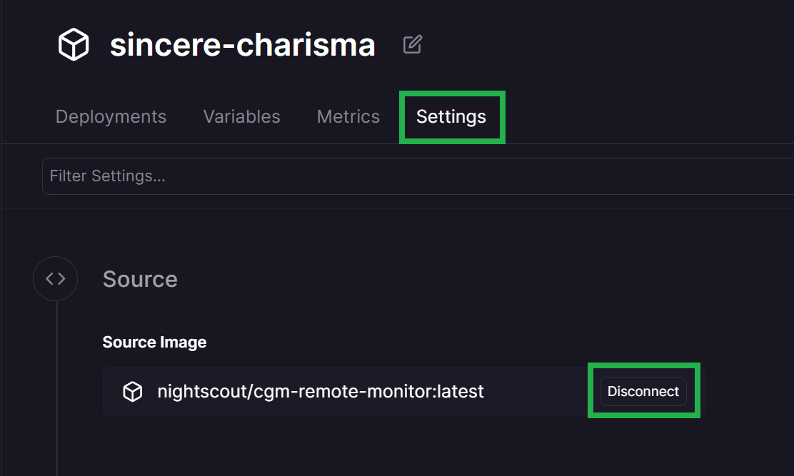
e) Select Connect image and replace nightscout/cgm-remote-monitor:latest with the version you want to deploy (for example nightscout/cgm-remote-monitor:latest_dev).
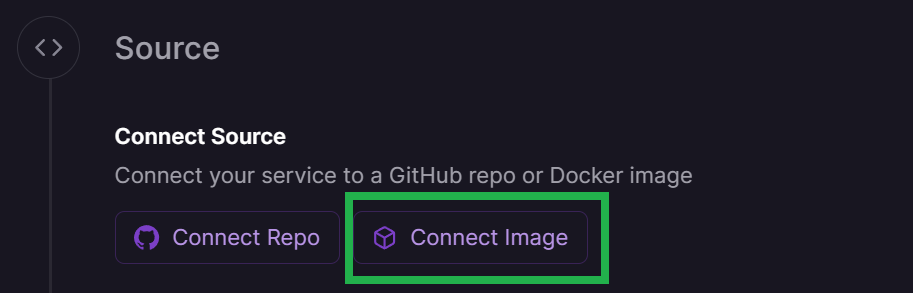
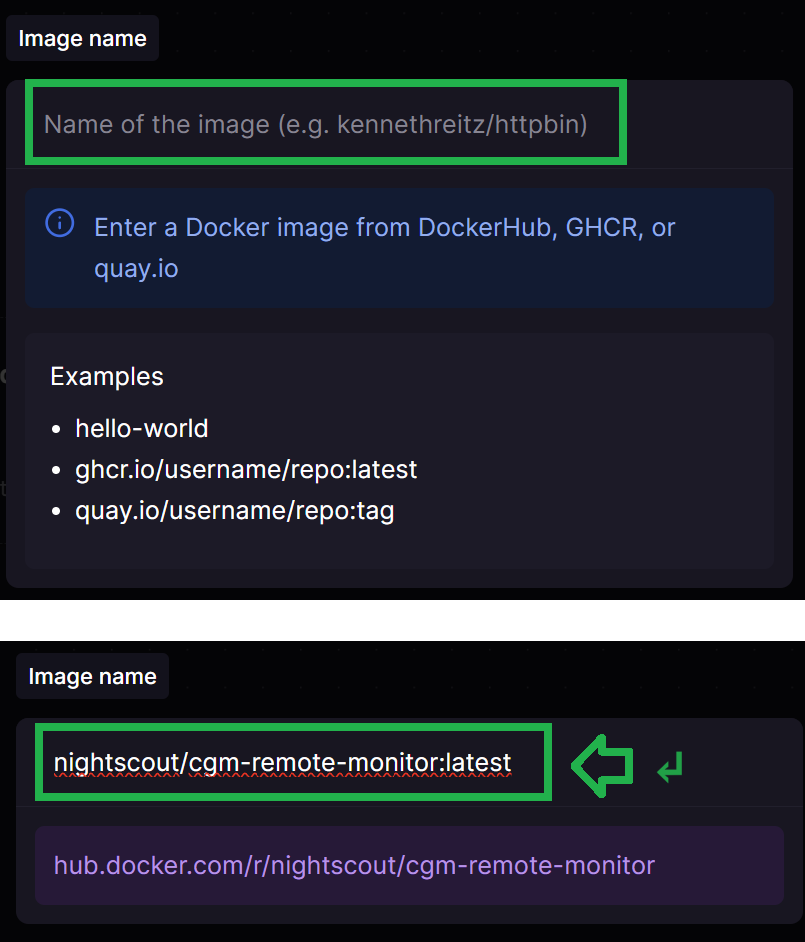
f) On the top left of the screen Deploy.
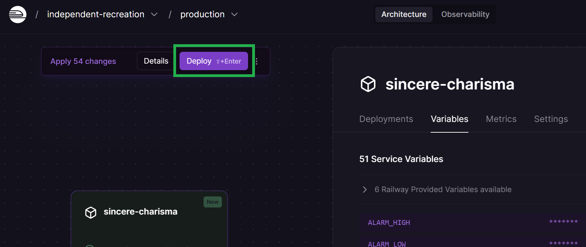
{kind=link}
{kind=link}
{kind=link}
{kind=link}
{kind=link}
Your site will redeploy with the latest version.
Log into Northflank: https://app.northflank.com/login
Select your Nightscout project 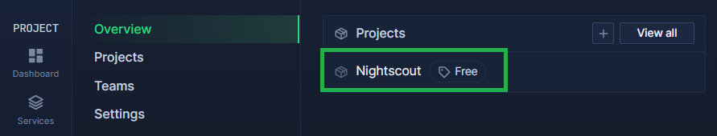
Select your Nightscout service 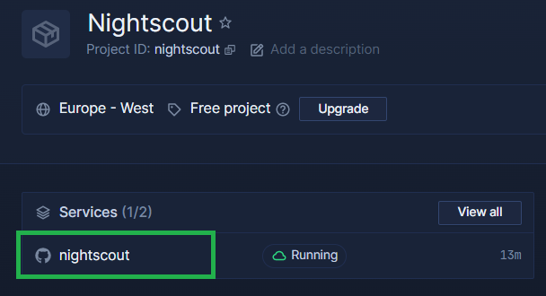
Click on the pen icon after the current branch (example below:
master) 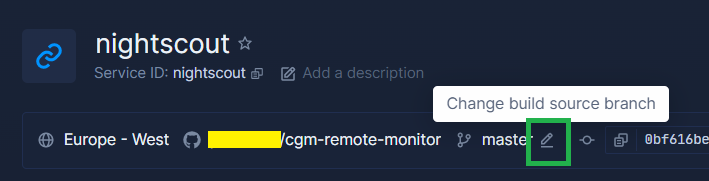In the branch list, select the version you want to deploy, then click
Update Build Source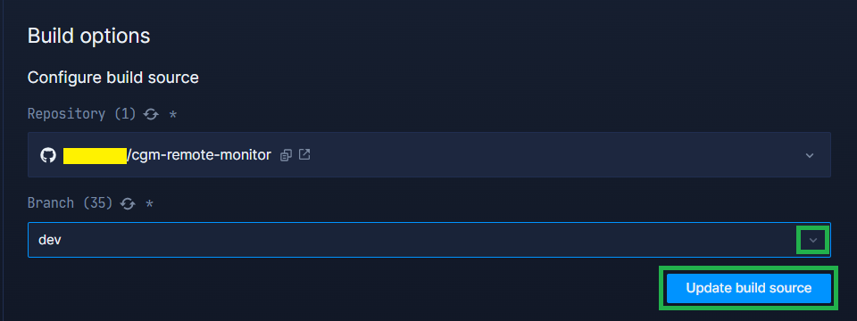Your site will redeploy with the selected branch
{kind=link}
{kind=link}
{kind=link}
{kind=link}
Log into Northflank: https://app.northflank.com/login
In Overview, Edit deployment 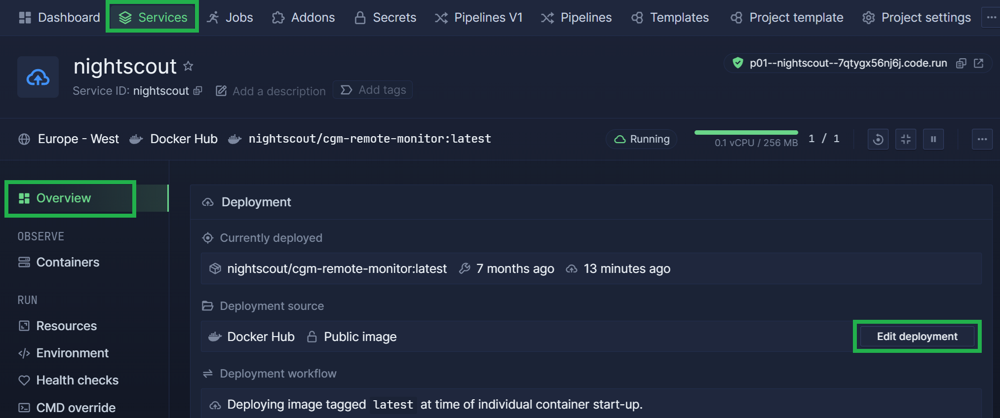
In the image path, replace
nightscout/cgm-remote-monitor:latestwith the version you want to deploy (for examplenightscout/cgm-remote-monitor:latest_dev), then clickUpdate & rollout restart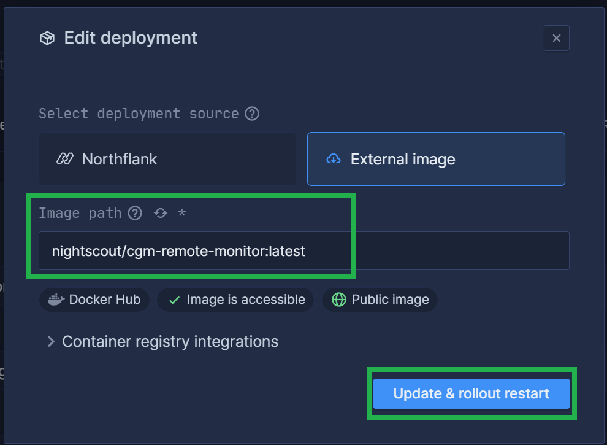Your site will redeploy with the selected branch
{kind=link}
{kind=link}
Log into Azure : https://portal.azure.com/
Select your App service, your Nightscout site name (you should see it in recent resources) 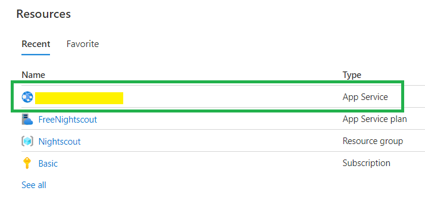
If you didn’t find it, it will show in App Services 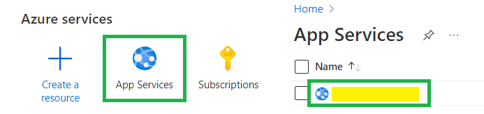
In the left menu select Deployment Center, in Full Image Name and Tag change the version to:
nightscout/cgm-remote-monitor:latest_dev(example for dev) Or whichever version (changefilter tagfind the version) in the list.nightscout/cgm-remote-monitor:14.2.6(example for 14.2.6) 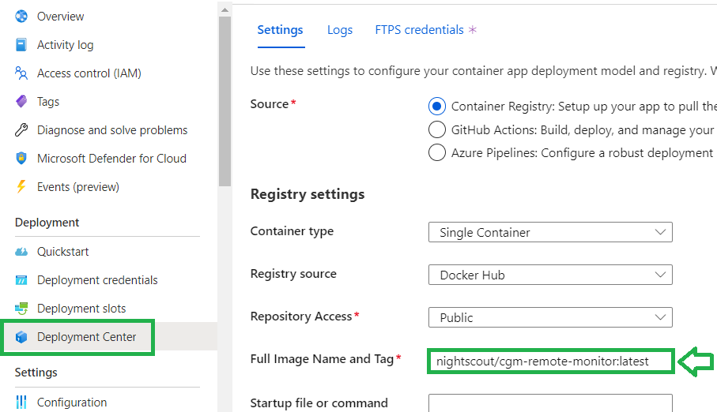Click Save (or Discard if you don’t want to save). Your site will redeploy if you changed the configuration. Expect a few minutes before it comes back online. 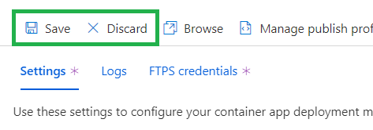
{kind=link}
{kind=link}
{kind=link}
{kind=link}
Follow these instructions to install flyctl on your computer. You also need to install git if you’re using a Windows computer.
Note for Windows: you might experience issues with Git Bash or PowerShell, try an elevated command prompt.
Log in Fly.io:
flyctl auth loginVerify your Nightscout app name, use it to replace
example-nsin the following lines.flyctl app listVerify your app current region (three letters code) and make sure it’s in the free tier.
flyctl app listNavigate to the
cgm-remote-monitorfolder from which you deployed Nightscout on your computer. Verify it contains thefly.tomlconfiguration file you used to deploy your site.If you don’t see this file, recover it:
flyctl config save --app example-ns
If you migrated from Heroku using the wizard, or if you can’t find this folder on your computer, follow the next steps to recover your Fly.io configuration:
Fork a copy of the Nightscout repository and change directory
git clone https://github.com/nightscout/cgm-remote-monitorcd cgm-remote-monitorDownload a default
fly.tomlconfiguration fileflyctl config save --app example-ns
Update your Nightscout repository
git config pull.rebase truegit pull origin devEdit your
fly.tomlconfiguration and search this section:
[[services]]
protocol = "tcp"
internal_port = 8080
processes = ["app"]
Change the internal port value to 1337, do not change anything else, do not remove the spaces before
internal_port.internal_port = 1337Save the
fly.tomlfile.Deploy Nightscout:
flyctl launchWait until completion, you site should now be running the latest Nightscout version.
Updating existing machines in 'example-ns' with rolling strategy
-------
✔ Machine 1781944ae46438 [app] update succeeded
-------
Visit your newly deployed app at https://example-ns.fly.dev/
Don’t forget to downscale the app if you haven’t yet!
flyctl scale --app example-ns count 1
Log into Render: https://dashboard.render.com/
Select your Nightscout project 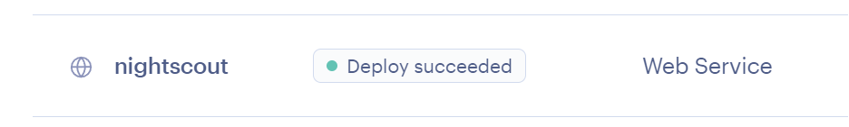
Go to
Settingsand scroll down toDeploy. Edit the URL of the image deployed 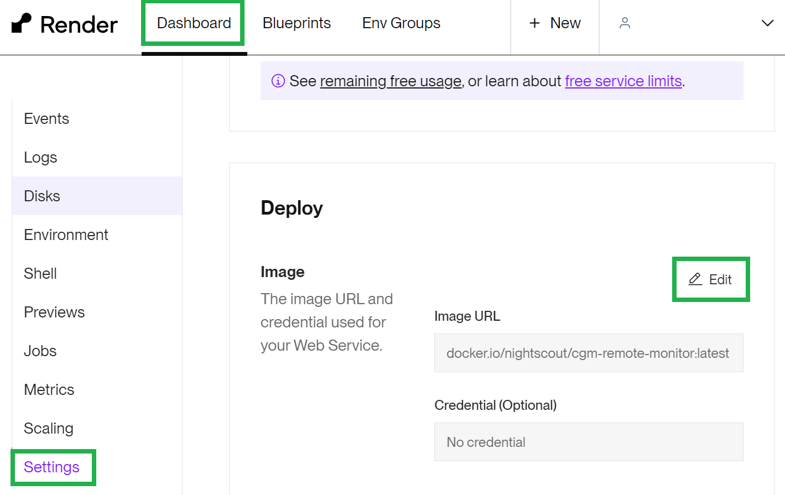Change it to:
nightscout/cgm-remote-monitor:latest_dev(example for dev) Or whichever version (changefilter tagfind the version) in the list.nightscout/cgm-remote-monitor:14.2.6(example for 14.2.6) 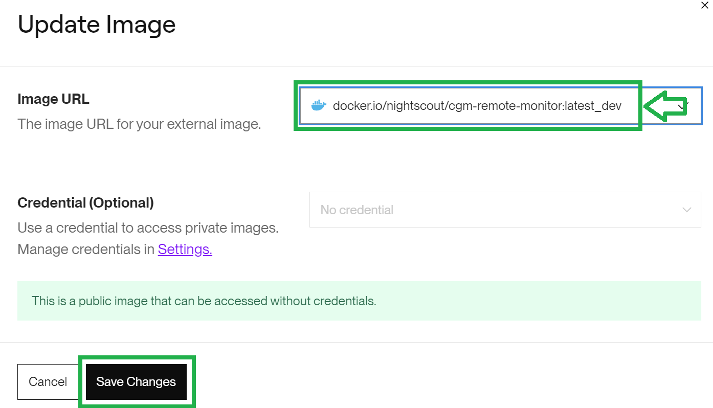Click
Save changes.Your site will redeploy with the selected branch
{kind=link}
{kind=link}
{kind=link}
Check your profile time zone is correct. You’re done!
How to return to the master release
If things don’t go as expected you can simply redeploy your master branch performing the same steps and using master instead of dev.
When the dev branch gets merged into release, just follow the classic update method.